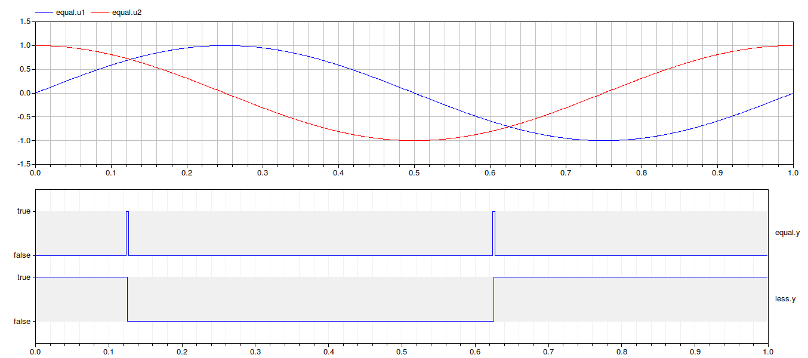
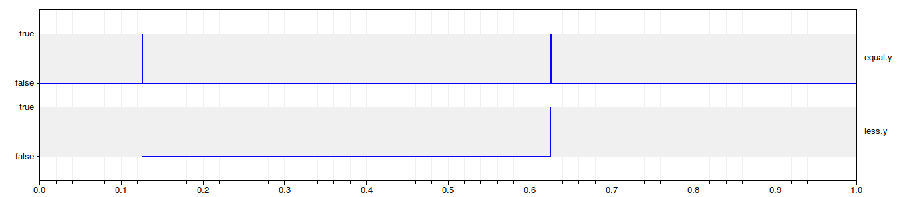

Examples
Information
Extends from IndustrialControlSystems.Icons.ExamplesPackage (Examples package icon).
Package Content
Information
Description
In this examples are tested the Real comparison operations.
The two signals compared are:
u1(t) = sin(t)
u2(t) = cos(t)
The boolean signals are true if
u1(t) == u2(t)
u2(t) < u2(t)
Depending on the value of the sampling time Ts adopted and the tolerance value of eps,
the conditions can be true or not.
In this case Ts = 0.001 and eps = 0.01

In this case Ts = 0.001 and eps = 0.001

It is evident that with a smaller tolerance, the boolean signal that represents the equality of the two signals becames shorter.
Extends from Modelica.Icons.Example (Icon for runnable examples).
Parameters
| Name | Description |
|---|
| Sampling |
| Ts | Sampling time |
| Real numbers |
| eps | Comparison threshold |
Automatically generated Mon May 21 13:34:13 2012.
 IndustrialControlSystems.Logical.Comparisons.Examples.TestComparison
IndustrialControlSystems.Logical.Comparisons.Examples.TestComparison